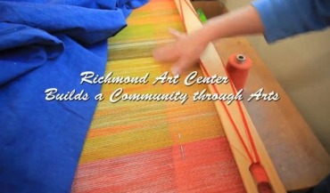

A grandmother’s pearl, a eucalyptus branch, and a centuries-old bead washed ashore off the coast of Mozambique, all entwined with deliberate intricacy. “Jewelry can tell a story in many ways,” says Point Richmond jeweler and metalsmith Ali Amaro. Come December, Amaro’s custom “Art Jewelry & Objects” shop and gallery in Point Richmond will turn one—one year of creating “wearable art,” hunched over a precision saw, hydraulic press, and torch flame.
Hilltop Mall, once seen as a boost for economic revitalization of Richmond, now sits in limbo, awaiting foreclosure. Michael Piazzola, general manager of real estate firm Jones Lang LaSalle, receiver for the foreclosure, said the bank that foreclosed the mall will place it up for sale at a day and time of its choosing.
Enormous ship parts once flew through the air at Riggers Loft, a renovated port building named for the hoisting cranes built there during the war effort in the 1940s. Imported and puzzled together in under a month, these parts—assembled with steel and sweat—would quickly become something much larger than their sum, massive ships exported to different theaters of war.
Richmond residents will be able to apply for the city’s first city-issued identification card as of Oct. 15. Like a similar card issued by the city of Oakland, Richmond’s ID card can also be used as a debit card. “In Richmond, we welcome everyone,” said Mayor Gayle McLaughlin. “This card is an essential step toward greater equity and equality.
Free Trade Zone by the number. A motion graphic on Free Trade Zone.
On a sunny morning two hundred feet above the tossing waters of San Francisco Bay, Caltrans officials took reporters on a tour of the condemned East Span of the old Bay Bridge, and gave a progress report. Crews began to dismantle the 78-year old Bay Bridge last year, in the reverse order of how it was built in the 1930s; from west to east, and top to bottom.
Alex Knox, 26, is wearing a blue shirt, grey suit and smiling into his ice water. His mouth becomes a cartoon shape when he smiles, a bright crescent. It is a week after the election, and Knox looks relaxed - very different from when we first met on the eve of the election.
Find out how teaching and education volunteers work to improve teaching and education standards in China. English subtitle will be up soon. Want To Publish A Book? Learn How To Get Published Today. Claim Your Free Publishing Guide.www.iuniverse.comStart Homeschool NowIt's Not Too Late For Calvert Edu!
Regarding Hilltop Mall. I live in Richmond and I have been shopping at Hilltop twice in 10 years. The first was to exchange a remote at Sears. It was bar none, the worst shopping experience I’ve ever had. The employees had no idea what to do and were totally unprofessional. I walked through the mall to check it out and I had never heard of lots of the stores, it was empty and dark and unwelcoming.

Find out how fiber arts evolve and presented in Richmond Art Center.
{kind=link}
{kind=link}
{kind=link}
{kind=link}
{kind=link}